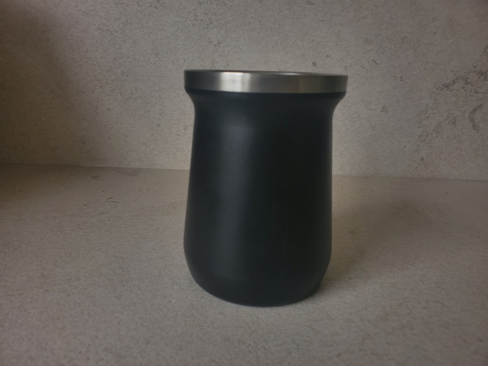

Mate de Acero Inoxidable negro.

Este es un mate de acero inoxdibale, resistente y duradero. Es un mate muy practico e higienico.
Características generales:
- Capa de acero doble: No se calienta en nuestra mano. Haciendo posible disfrutar del mate sin quemarnos.
- Capacidad: 50 gramos de yerba o 180 ml.
- Medidas: 10 cm de alto y 8 cm de diámetro.
- Moderno y elegante, versatil para diferentes ambientes (trabajo, hogar, etc).